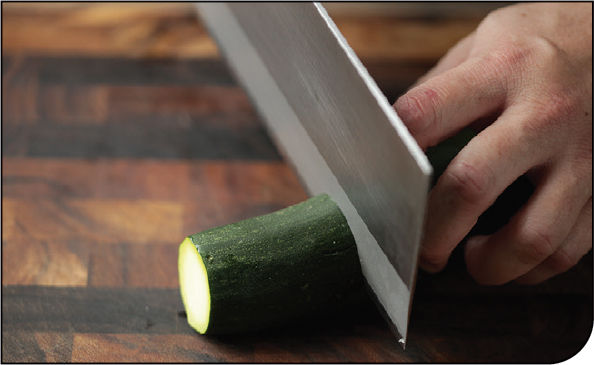
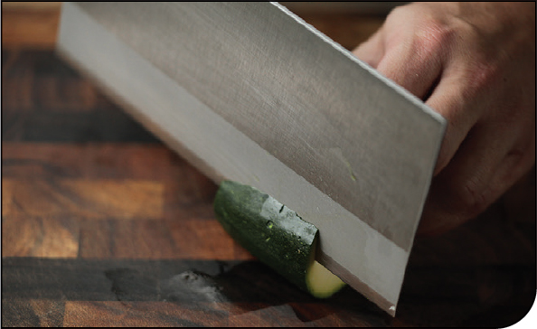
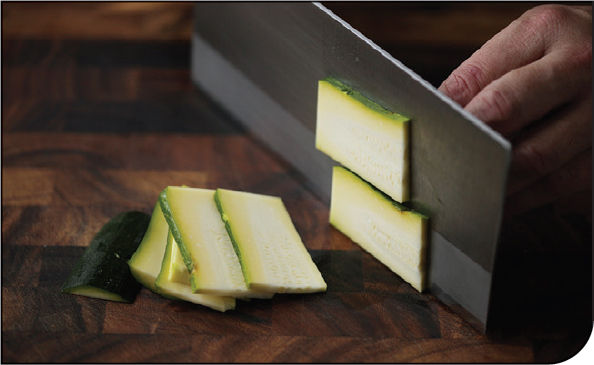
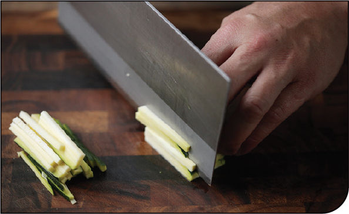
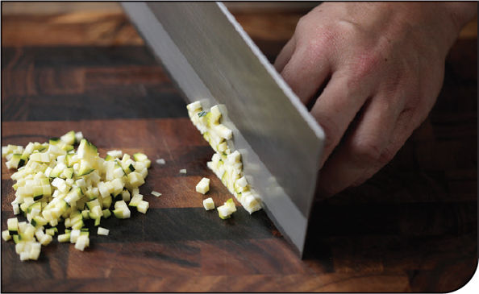

KNIFE SKILLS
How to Cut Zucchini, Summer Squash, Carrots, and Other Long, Thin Vegetables into Planks, Matchsticks, and Dice
Cutting zucchini, carrots, parsnips, slender eggplants, and other long, skinny, firm to semifirm vegetables into planks, matchsticks, and fine dice is essentially the same process, no matter which vegetable you’re working with. Here I’ll show you how to do it with zucchini.
Step 1 • Cut Crosswise into Segments

Using a sharp chef’s or santoku knife, cut the vegetables crosswise into 2- to 3-inch segments. Shortening their length makes it easier to cut planks and matchsticks down the line.
Step 2 • Form a Stable Base

Holding a segment firmly against the cutting board, slice off one side to form a flat surface. Set the slice aside and turn the vegetable down so that the flat side is against the cutting board, giving it a stable base for your next cuts.
CUT INTO PLANKS

Hold the vegetable steady with your nonknife hand. Keep your fingers curled backward and your thumb tucked behind them to prevent accidental injuries. Hold your knife flush against the knuckles of your nonknife hand and cut into thin, even planks. Stack three or four of the cut planks.
CUT INTO MATCHSTICKS

Hold the vegetable steady with your nonknife hand. Keep your fingers curled backward and your thumb tucked behind them to prevent accidental injuries. Hold your knife flush against the knuckles of your nonknife hand and cut into thin, even matchsticks.
CUT INTO DICE

Rotate the matchsticks 90 degrees. Hold the vegetable steady with your nonknife hand. Keep your fingers curled backward and your thumb tucked behind them to prevent accidental injuries. Hold your knife flush against the knuckles of your nonknife hand and cut into fine dice.